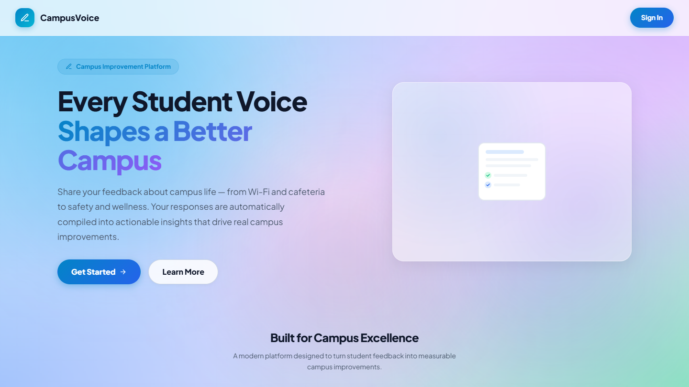
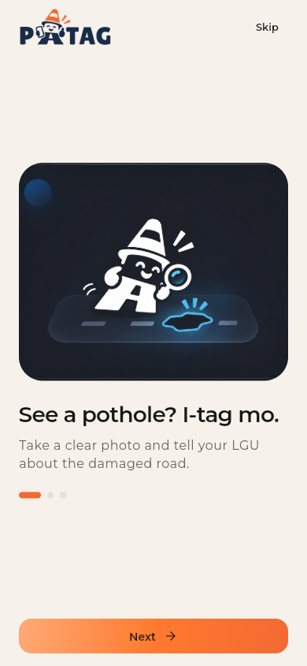
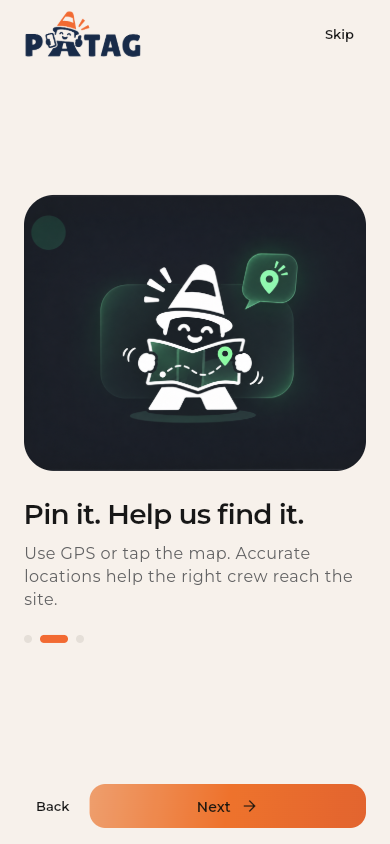
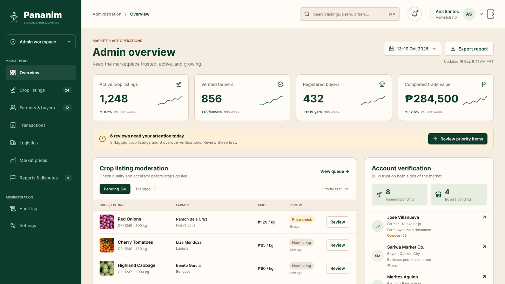

Open to Roles & Internships · BSIT Junior @ BulSU
Hi, I’m Mhaithan Caliuag
I’m a Front-End Developer
& UI/UX Researcher
Third-year BSIT student at Bulacan State University passionate about turning user needs into working web apps. I split my time between researching how people interact with systems, crafting intuitive interfaces in Figma, and engineering clean, accessible code.
Core Technical Stack & Tools:
JavaScript (ES6+)
HTML5 & CSS3
React
PHP & MySQL
Figma UI/UX
Git & GitHub
Selenium Testing
SELECTED WORK
Featured Projects
A collection of software solutions I've worked on, focused on solving real-world problems through thoughtful design and technology.
01 / EDUCATION TECHNOLOGY
CampusVoice
Campus Feedback & Survey Management System
A centralized web platform that helps educational institutions collect student feedback, conduct surveys, and turn responses into actionable insights for improving the campus experience.
PHP
MySQL
JavaScript



02 / CIVIC TECHNOLOGY
PATAG
Smart Road Reporting & Maintenance Management System
A civic technology platform that enables citizens to report road damage with photos and location data, while helping local government teams manage, monitor, and track road maintenance requests.
Flutter
React
TypeScript
03 / AGRICULTURAL TECHNOLOGY
Pananim
Agricultural Trading & Supply Chain Management System
An agricultural platform connecting farmers, buyers, and logistics providers through transparent crop trading, market pricing, and coordinated transportation for a more efficient supply chain.
React
TypeScript
Vite
pananim.ph/admin/overview

Candidate Profile
Why I’m Ready to Add Immediate Value
A passionate front-end developer who bridges the gap between design and production code.
Mhaithan Caliuag
Front-End Developer & UI/UX Researcher
★ BSIT · BulSU · CLASS OF 2026
“I design what people actually use, then build it.” Combining empathetic user research, clean code, and fast execution.
Contact Candidate →What I bring to your team
- 1 Clean, Maintainable Code
- 2 Pixel-Perfect UI Delivery
- 3 Rapid Learning & Execution
100%
Reliability & Focus
- Fast Onboarding & Git Flow
- Component-Driven Development
- Cross-Browser & Accessibility
Clear & Proactive Communication
Active in code reviews, daily standups, and documentation to keep team workflows completely frictionless.
Driven
Work Ethic & Growth Mindset
★★★★★
Production Ready
Build & ship responsive interfaces with precision
Translating complex Figma designs into responsive, clean code with modular CSS, semantic tags, and performance audits.
Technical Competencies
Skills that elevate your software products.
Combining modern frontend development practices with thoughtful UI/UX design to build scalable, user-centric web applications.
Discuss Technical Fit
HTML5 & CSS3
JavaScript (ES6+)
React
PHP
MySQL
Figma
Selenium Testing
Git & GitHub
AWS Cloud Basics
01 · Frontend Engineering (HTML, CSS, JS, React)
Writing clean, semantic, and modular frontend architectures with modern JavaScript (ES6+), fluid CSS Grid & Flexbox, and responsive React component trees.
02 · UI/UX Research & Usability Prototyping
Conducting user journey research, wireframing in Figma, and running hands-on usability tests to ensure interfaces feel obvious and effortless to navigate.
03 · Backend Logic & Relational Databases (PHP & MySQL)
Building secure server-side scripts, handling form validation, managing relational schema queries, and connecting frontend clients to MySQL datastores.
04 · Quality Assurance & Automated Testing (Selenium)
Writing automated end-to-end browser test scripts using Selenium to verify critical registration, booking, and form submission flows across releases.
05 · Modern Tooling (Git, GitHub, AWS Basics, VS Code)
Strict version control discipline with branch isolation, clear commit histories, pull requests, and fundamental AWS cloud hosting deployments.
Academic Background & Track Record
Education & Experience
Hands-on student engineering, capstone research, and active software development at BulSU.
Bachelor of Science in Information Technology (BSIT)
Bulacan State University (BulSU) · Junior Student (Class of 2026)Third-year BSIT student specializing in web engineering, human-computer interaction, and modern software architectures. Enrolled in IT305 Advanced Web Development (BSIT 3H-G2 / ADET - Application Development and Emerging Technologies) and active capstone research.
- Core Coursework: Advanced Web Development (IT305 / ADET), Database Management Systems (MySQL), Software Engineering, Object-Oriented Programming, and Web Systems & Technologies.
- Academic Standing: Active student developer leading UI/UX prototyping, frontend architecture, and usability testing across class project groups.
- Focus: Bridging empathetic user research and modern responsive web applications that ship reliably.
Frontend Developer & UI/UX Researcher
Academic Capstone & Course Projects · Bulacan State UniversityLead UI designer and frontend developer for major departmental systems including PATAG (web & mobile road pothole reporting and monitoring system for LGUs), CampusVoice (centralized student voting & governance portal), and Pananim (wholesale agricultural crop marketplace & logistics platform).
- Designed interactive wireframes, user journeys, and component systems in Figma; transformed them into responsive HTML/CSS/JavaScript and React interfaces.
- Executed usability test sessions with student testers, documenting friction points and iterating button hierarchies for higher completion rates.
- Integrated backend endpoints with PHP, MySQL, and Firebase; implemented automated tests using Selenium for critical user flows.
Web Developer & Creative Tech Lead
Freelance, Student Initiatives & Campus Projects · Baliwag, BulacanDesigned and deployed high-performance responsive web pages and digital assets for campus campaigns, student clubs, and local client initiatives. Emphasizes clean code, accessible semantic HTML, and fast loading performance.
- Built modular CSS component architectures and interactive JS micro-interactions with 95+ Lighthouse performance scores.
- Mentored classmates on Git version control (branches, pull requests), responsive viewport units, and modern layout algorithms (CSS Grid & Flexbox).
Engineering Workflow
How I Turn Ideas into Shipped Products
Researching user needs, writing clean code, and testing until it stops breaking.
01
Research & Wireframe
Understand user needs before writing a single line of code. Map user journeys, conduct usability research, and build interactive prototypes in Figma that feel obvious to navigate.
02
Build & Refactor
Develop modular, accessible code using semantic HTML5, modern CSS3, and JavaScript/React. Connect backend APIs (PHP/Node.js) and relational data (MySQL) cleanly.
03
Test, Automate & Deploy
Run automated Selenium tests, conduct hands-on usability testing with real users, check cross-device responsiveness, and deploy to modern cloud platforms with Git version control.
Hiring FAQs
Questions Recruiters & Hiring Managers Ask
What is your current academic status and background? +
I am a 3rd-year Bachelor of Science in Information Technology (BSIT) student at Bulacan State University (BulSU) (Section BSIT 3H-G2 / Class of 2026). My coursework focuses on Advanced Web Development (IT305 / ADET), database systems, and human-computer interaction.
What types of roles are you currently looking for? +
I am seeking Internship, Associate, or Junior Front-End Developer & UI/UX Designer positions, as well as full-time software engineering opportunities. Open to remote, hybrid, or onsite roles in Bulacan and Metro Manila.
What is your current availability and timeline to start? +
I am available to start immediately or within 1 to 2 weeks upon receiving an offer. I am prepared for technical assessments, take-home challenges, and live interviews.
What sets you apart from other junior candidates? +
I combine real technical development skills with strong UI/UX design sensibility. I do not just write code; I understand design systems, visual hierarchy, mobile usability, and business objectives. I am also exceptionally self-driven, receptive to feedback, and eager to learn.
How do you collaborate within an engineering team? +
I follow established Git workflows (feature branching, clear commit messages, pull requests), write readable code, participate actively in standups, and communicate roadblocks early to ensure project velocity.
Are you open to learning new frameworks or backend technologies? +
Yes, absolutely. I have strong fundamentals in vanilla JavaScript, DOM, CSS, and modern web standards, making it easy to adapt to React, Vue, Next.js, Node.js, TypeScript, or company-specific proprietary stacks rapidly.
How can we schedule an interview with you? +
You can reach me directly via email at mhaithan.lee.c@gmail.com or by phone at 0976 134 8316. I reply within 24 hours.
Ready to Add a Dedicated Developer
to Your Team? Let’s Talk.
Currently reviewing opportunities for full-time frontend and UI design positions.
Available for immediate hiring & onboarding
Direct Email
mhaithan.lee.c@gmail.com
Phone
+63 976 134 8316
Location
Baliwag, Bulacan, Philippines (Open to Remote & Onsite)